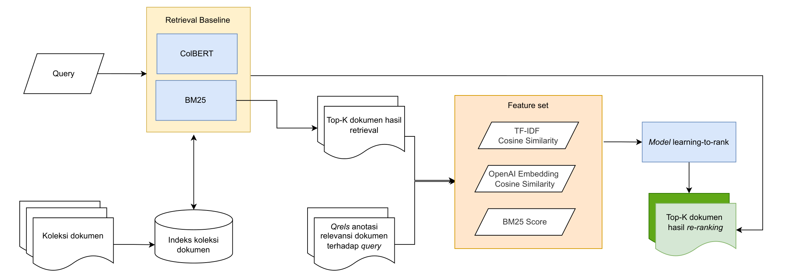
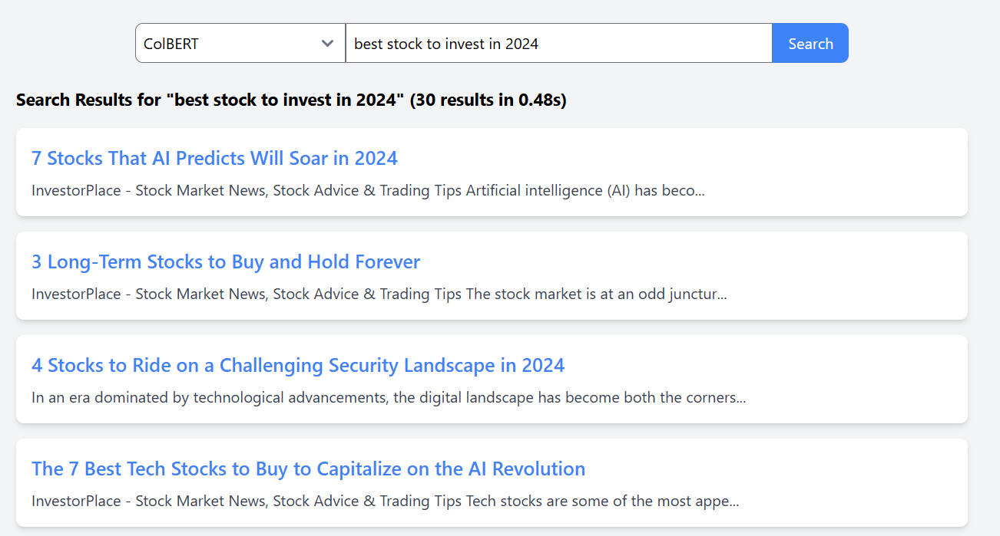

NASDAQ Stock News Hybrid Retrieval
Python, Information Retrieval, Docker
Overview
A mini search engine over sampled NASDAQ stock news comparing ranked retrieval and learning-to-rank methods. The system evaluates four retrieval pipelines: BM25 baseline, BM25 + TF-IDF reranking, BM25 + OpenAI Embedding reranking, and ColBERT (late interaction). Deployed as a full-stack demo with a Vue.js frontend on Contabo and a Python FastAPI backend on Railway, both containerized with Docker.
Dataset
Sourced from the FNSPID (Financial News and Stock Price Integration Dataset), which covers 15.7 million financial news articles from 1999 to 2023 across 4,775 S&P500 companies. The corpus was filtered to 16,918 articles published in 2023 from NASDAQ-100 stocks.
Queries were synthetically generated using GPT-4o: 3 queries per document, designed to reflect the relevance and information contained in each article. False negatives (9 per query) were sampled from BM25 results at the 90th, 95th, and 99th percentile. The final dataset contains 50,754 queries and 60,000 query-document pairs split into 20k train / 20k validation / 20k test.
Methodology
- BM25 - lexical baseline for initial document retrieval and indexing.
- BM25 + TF-IDF - BM25 retrieves top-30 candidates, then TF-IDF cosine similarity features are combined with BM25 scores and fed into an XGBoost classifier for reranking.
-
BM25 + OpenAI Embedder - same pipeline as above but replaces TF-IDF with
text-embedding-3-smallcosine similarity as the reranking feature. - ColBERT - late interaction retrieval using ColBERTv2 with a RoBERTa encoder, trained with KL-Divergence loss and hard negative sampling.
Results
| Model | Metrics @10 | Metrics @30 | Latency (s) | ||||
|---|---|---|---|---|---|---|---|
| MRR | P | R | MRR | P | R | ||
| BM25 | 0.415 | 0.064 | 0.640 | 0.0921 | 0.0328 | 0.1208 | 0.324 |
| BM25+TFIDF | 0.4178 | 0.0639 | 0.6390 | 0.4178 | 0.0257 | 0.7715 | 0.319 |
| BM25+OpenAI | 0.4483 | 0.0651 | 0.6515 | 0.4483 | 0.0257 | 0.7715 | 0.461 |
| ColBERT | 0.4368 | 0.0655 | 0.6555 | 0.4442 | 0.0259 | 0.7780 | 0.298 |
BM25+OpenAI and ColBERT consistently outperform the BM25 and BM25+TFIDF baselines. BM25+OpenAI leads on MRR at both cutoffs, while ColBERT dominates precision and recall with the lowest latency (0.298s).
Experiment Overview

Demo (Screenshot)
